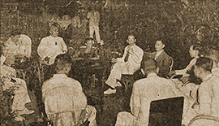

|
j
a v a s c r i p t |
May 25, 1943

Facing Camera (L to R):
Miss Guidote, Rodriguez Sr., Mrs.Baja, MP Chief, Interpreter Tribune: "Released prisoners belie myth about torture in Fort Santiago." Groups led by Eulogio Rodriguez, Miss Raymunda Guidote, have kind words to say about the treatment they received. One group of victims invited the Military Police officers to Guidote's residence to show the public everyone was happy. Hans Menzi, Fernando Perez, Dr. Manuel Panlilio, Rafael Gonzales and Hiram Ramos were present. The theatrical exercise only proves that the Japanese are anxious to erase the blot left by the previous administrators of Fort Santiago. That it is done in such an obviously false way is no testimony to Japanese intelligence. In fact, most Filipinos have discovered that the intelligence of the Japanese here is, on average, below theirs. Those with Meralco, the law courts, City Hall ... know only too well that they are easily fooled. Primco is corrupt, the Retailers Federation is a mess, and Neighborhood Associations have become a joke. Japanese political machinations are so obvious, their propaganda so stupid, that initial respect died long ago. Now fear of them is ebbing too, and Filipino officials are beginning to ride roughshod over them. There's a belief that our Executive Commission is feeling more confident. Tojo supposedly asked for a million Filipinos to defend themselves. Sure, you can have them in 24 hours, he was told, once we're independent and you've evacuated the country. As for conscription: "Do you want 90% of the Filipino people to go up to the mountains?" |
|
|
|
|